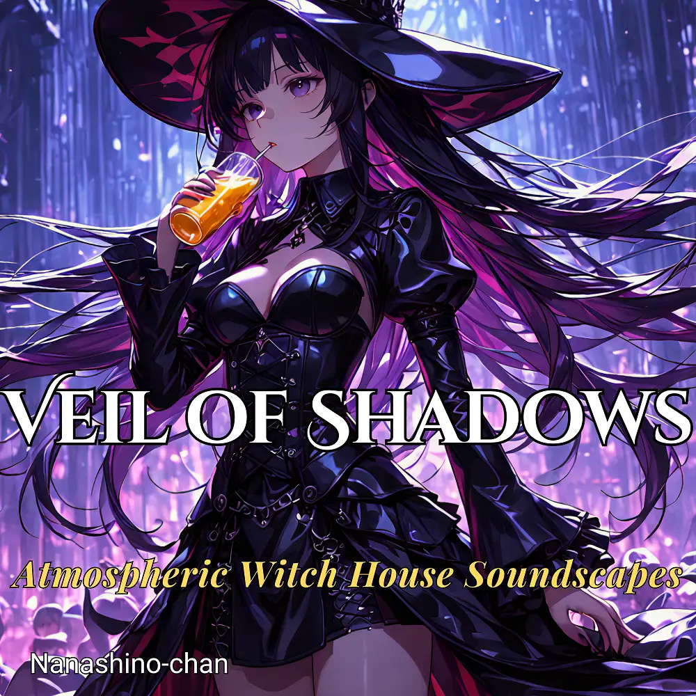

Witch House
Veil of Shadows| Atmospheric Witch House Soundscapes
Nanashino-chan
Nanashino-chanの「Veil of Shadows| Atmospheric Witch House Soundscapes」。Witch Houseを楽しめる全22曲のインストゥルメンタル作品です。「Whispers in the Dark / Shattered Moonligh」などを収録。気になる曲を試聴して、配信サービスでお気に入りを見つけてください。
2025-10-03 リリース · 22 曲 · Instrumental
アルバムを試聴
気になる音楽を、ここから。
曲を選ぶまでジャケットを表示します。試聴にはYouTubeを使用します。
YOUTUBE PREVIEW
試聴する曲を選んでください
曲を選ぶまでジャケットを表示します。試聴にはYouTubeを使用します。
再生できない場合は、配信サービスでアルバムや曲を開いてください。
配信サービスでアルバムを探す
「検索」のリンクは検索結果を開きます。サービス内でアルバムや曲を選択してください。
収録曲一覧 22
- 01Whispers in the Dark
- 02Shattered Moonligh
- 03Eclipsed Dreams
- 04Spectral Echoes
- 05Phantom Horizon
- 06Veil of Shadows
- 07Wraith's Lament
- 08Haunted Reverie
- 09Midnight Apparition
- 10Fading Light
- 11Duskbound Spirits
- 12Twilight Ritual
- 13Cloak of Silence
- 14Arcane Pulse
- 15Crimson Veil
- 16Chant of the Forsaken
- 17Whispers of Oblivion
- 18Spectral Haze
- 19Enchanted Ashes
- 20Lurking Shadows
- 21Forgotten Pathway
- 22Moonlit Abyss
SNSで使いたい音源を探す
「Nanashino-chan ＋ 曲名」をコピーして、SNSアプリの音源検索に貼り付けてください。音源の表示は地域やアカウントにより異なります。コピー機能は利用許諾を付与するものではありません。